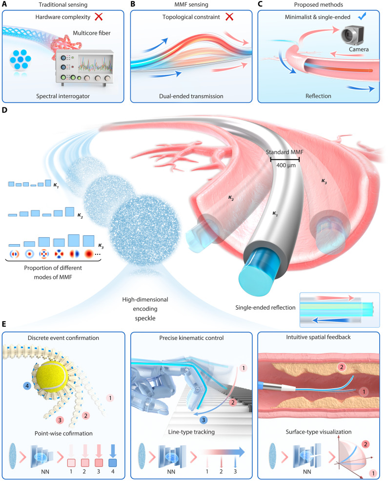

摘要解读
基于单端多模光纤与深度学习的软体机器人多功能形状感知
Deep learning–enabled versatile shape perception for soft robots via single-ended multimode fiber
解读更新 2026-10-16 14:46 · 依据公开摘要整理，未核验全文细节
软体机器人如何在不断变形、空间受限的交互中感知自身形状？这项研究将单端多模光纤与深度学习结合，用同一物理通道承载不同形态感知任务，提供了理解“简化硬件、通过计算扩展感知能力”的具体案例。
文章目录
连续变形与狭小空间，对本体感知提出双重要求
软体机器人走向具身智能，离不开精确的本体感知。难点不仅是识别某个固定姿态，还包括在多样交互中捕捉连续变形。摘要指出，尤其在空间受限的介入场景中，能够普遍适应这些需求的方案仍然不足。
因此，这项研究关注的不只是形状识别精度，还包括感知接口如何集成，以及同一硬件如何适配不同任务。离散状态确认、连续形状跟踪与三维形态重建，构成了它所面向的不同感知需求。
单端反射式光纤，把散斑转化为形状信息
作者提出基于单端多模光纤（MMF）的深度学习形状感知方法。其极简反射式架构利用光学的集成优势，消除了对复杂解调单元和远端器件的依赖，将硬件简化作为方案的重要组成部分。
在信息处理上，研究把混沌光学散斑场视为编码高维形状信息的数据流，再通过可重配置的神经解码器，将单一物理通道用于不同感知模式。关键关系是：同一感知接口提供信息，由面向任务的解码方式形成不同输出。
单端多模光纤的集成方式与多模式感知


图解：极简单端多模光纤实现多功能感知。（A）传统传感方法的硬件复杂性。（B）常规双端多模光纤的拓扑约束：传输回路阻碍微创集成。（C）所提出的单端集成架构，反射式设计消除对远端硬件的依赖，形成紧凑的感知接口。（D）受限环境中的散斑形状编码：变形调制内部模式耦合，将不同几何形状映射为独特的高维散斑场。（E）从单一接口解码离散点式状态确认、连续线式形状跟踪和三维面式重建，分别以软体臂稳定抓取、灵巧操作和血管介入机器人导航为例。
原文图注与出处
Versatile perception via a minimalist single-ended MMF. ( A ) Hardware complexity in traditional sensing methods. ( B ) Topological constraints of conventional dual-ended MMF sensing, where the transmission loop hinders minimally invasive integration. ( C ) Minimalist architecture of the proposed single-ended integration. The reflective design eliminates distal hardware dependencies, enabling a compact sensing interface. ( D ) Speckle-based shape encoding mechanism within a constrained environment. Deformation modulates internal mode coupling, mapping specific geometric shapes ( K 1 , K 2 , and K 3 ) to unique high-dimensional speckle fields. ( E ) Versatile neural perception modes decoded from a single interface. The system spans discrete point-wise state confirmation (e.g., stable grasping with soft arms), continuous line-wise shape tracking (e.g., dexterous manipulation), and 3D surface-wise reconstruction (e.g., navigation of vascular interventional robots).
He Zhaofan et al.
原文图页 · CC BY 4.0从夹持状态到三维形态，摘要报告了哪些结果
摘要报告：软体夹爪的离散状态确认准确率为>99%；仿生灵巧手的连续形状跟踪实现约5倍的空间分辨率增强；软体手术机器人的三维形态重建达到IoU>0.93。这些指标分别对应不同任务，不能直接合并为一个统一的性能结论。
作者据此提出，通过计算突破硬件适应性限制的多功能感知框架，并将其定位为软体机器人数字孪生闭环控制的基础。这里应区分已报告的感知结果与预期用途：摘要并未报告数字孪生闭环控制本身的验证效果。
高指标之外，样本与验证边界仍待进一步阅读
仅凭摘要，无法判断样本规模、数据采集与划分方式、训练和测试之间的独立性，也无法明确约5倍空间分辨率增强所对应的比较基准。摘要未交代跨机器人、跨环境或长期运行的验证范围，因此尚不能据此判断方案的泛化能力与稳定性；这不等于论文没有开展相关工作。
阅读启发：先分清形状感知与数字孪生控制
阅读启发：值得继续关注的是，可重配置解码器如何适配不同任务，以及这种适配需要怎样的数据与训练条件。对关注智能运维和数字孪生的读者，还应进一步厘清形状感知输出如何进入控制环节；当前摘要支持讨论感知基础，不宜延伸为已经验证的故障诊断或预测维护能力。
以上为本站阅读启发与建议，不是论文已验证的结论。